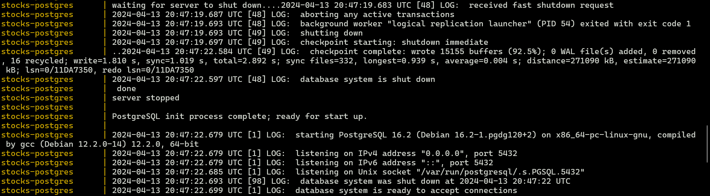
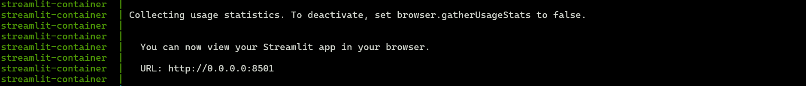
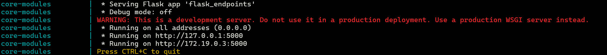
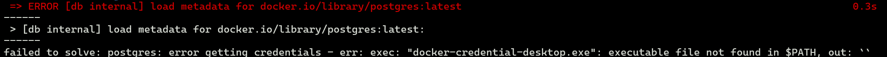

How-To Guides
As mentioned previously, what we are trying to achieve is to have three separate containers, one for each microservice, that communicates with each other via RESTful API and database connection.
An NFS server is set up to allow sharing of database backup file (.dump) with the database container.
The database container acts as an NFS client and accesses the directory shared by the NFS server. The database container then restores the database via pg_restore. After that, the database container is ready to accept connections to the database.
The business logic container receives requests sent from the user via the web app container and sends them to the database container via database connection. After the database container returns the data, the business logic container then processes the data and returns it in a certain format to the web app container.
The web app container receives the data from the business logic container, does some simple processing and displays the data back to the user.
As each container depends on one another. It is vital to set them up accordingly. Before you start, ensure that you have the folllowing dependencies installed: - Docker - net-tools (to get your IP address) - API Key from NewsAPI - vim (optional)
To set-up
-
Clone the project repository using Git.
-
Paste NewsAPI Key into parameters.py under NEWS_API_KEY
-
There are three methods to provide the database container with the backup (.dump) file:
As discussed previously, the NFS method sets up an NFS server and shares files with the NFS client.
-
Get your ip address:
Open a terminal and type
ifconfigorip aLook for the inet or inet addr entry under the relevant network interface. It is usually the first one from the top. -
Save your IP Address in a global variable <HOST_IP>.
export HOST_IP=<your IP address> -
Install NFS
sudo apt install nfs-kernel-serversudo systemctl start nfs-kernel-server.servicesudo vim /etc/exportsNOTE: Replace vim with the editor of your choice.- Add
<path-to-cloned-repository>/network-directory *(rw,sync,no_root_squash,no_subtree_check) sudo exportfs -a
The non-NFS volume mounting method mounts a local volume with the container and allows the container to access the required backup file through the shared volume.
-
In the docker-compose.yml, comment out the volumes section (lines 53-59).
-
Replace
- nfs-volume:/nfsin line 16 with- ./network_directory:/nfs
The non-NFS docker copy method uses the docker copy to copy the required file to the correct directory in the container.
-
In the docker-compose.yml, comment out the volumes section (lines 53-59).
-
In the docker-compose.yml, comment out the volumes section in db (lines 15-16).
-
In the terminal, type
docker copy ./network_directory/db.dump stocks-postgres:/nfs
-
-
Run
docker compose upIf successful, you should see three different parts as illustrated below:
-
Stocks-postgres

-
Streamlit

-
Core-modules

-
-
Once user is able to see the three successful images, user can now go to 127.0.0.1:8501 using your web browser to access the app.
To stop the application
-
Run
docker compose down -
Run
docker image rm stocktracker-db:latest -
Run
docker image rm stocktracker-core:latest -
Run
docker image rm stocktracker-web:latest -
Run
docker network rm stocks-network -
If you have NFS set up, run
docker volume rm stocktracker_test-volume
Common issues:
1. Load metadata error

Could either remove "credsStore": "desktop.exe" from ~/.docker/config.json OR docker pull postgres && docker pull ubuntu:22.04 && docker pull python:3.10-slim
- Rerun
docker compose up
2. Missing core-modules successful image
If the streamlit image appeared before the core-modules image, give it 30 seconds and it should appear. This is because the core-modules container is "eager-loading" the data of the database and saving it in a local variable.